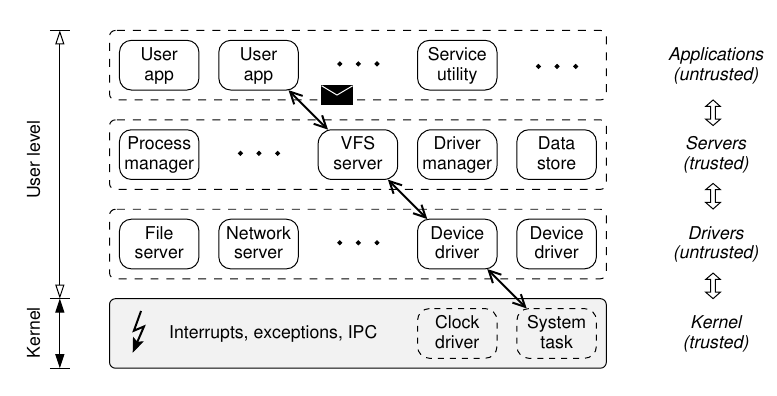

Minix Introduction
Introduction
Instead fo reading this introduction it will be better if you watch Andrew Tanenbaums talk on Minix 3 given at FOSDEM.
Different kinds of people use computers now than several decades ago, but operating systems have not fully kept pace with this change. Early users expected the computer to crash often; reboots came as naturally as waiting for the neighborhood TV repairman to come replace the picture tube on their home TVs. All that has changed and operating systems need to change with the times.Modern computer users are from a broad cross-section of society. Most of them have a set of mental expectations that we call The TV model.
It goes like this:
- You buy the device.
- You turn it on.
- It works perfectly for the next 10 years.
Most electronic devices fit this model well, the one exception being the personal computer. In addition to mind-numbing complexity (e.g., even networking experts have trouble configuring a wireless base station, despite the 500-page manual), they are prone to crashes and blue screens of death, issues unheard of with other electronic devices.
Most modern computer users want their systems to work all the time and never crash, ever. In engineering terms, this requires a mean time to failure (MTTF) appreciably longer than the expected lifetime of the computer.The average user virtually never complains that the computer itself is too slow (e.g., it cannot update a spreadsheet fast enough), although complaints about the speed of the Web are common. Over time, the relationship between speed and reliability has reversed. Most users now consider the reliability of the computer to be far more important than its speed, the reverse of 40 years ago.
Yet operating system reliability is still poor. To make the research challenge more explicit, consider a device driver that contains a fatal bug such as a store through an invalid pointer or an infinite loop. In commodity operating systems, when this bug is triggered, it crashes or hangs the entire system because the buggy code is running in kernel mode. All user programs that were running at the time the bug struck are killed, all user work is lost, and all FTP, Web, and e-mail transfers are abruptly aborted.
Studies have shown that software contains about 6-16 bugs per 1000 lines of code, it is simply infeasible to get all code to be correct. Therefore, the MINIX OS was designed in such a way that certain major faults are properly isolated, defects are detected, and failing components can be replaced on the fly, often transparent to applications and without user intervention or loss of data or work.
MINIX 3 and its architecture
MINIX 3 is a microkernel based POSIX compliant operating system designed to be highly reliable, flexible, and secure. The approach is based on the ideas of modularity and fault isolation by breaking the system into many self-contained modules. In general the MINIX design is guided by the following principles:
Simplicity: Keep the system as simple as possible so that it is easy to understand and thus more likely to be correct.
Modularity: Split the system into a collection of small, independent modules and therefore prevent failures in one module from indirectly affecting another module.
Least authorization: Reduce privileges of all modules as far as it is possible.
Fault tolerance: Design the system in a way that it withstands failures. Detect the faulty component and replace it, while the system continues running the entire time.
The operating system is structured as follows. A minimal kernel provides interrupt handlers, a mechanism for starting and stopping processes, a scheduler, and interprocess communication. Standard operating system functionality that is usually present in a monolithic kernel is moved to user space, and no longer runs at the highest privilege level. Device drivers, the file system, the network server and high-level memory management run as separate user processes that are encapsulated in their private address space.

The above figure shows the structure of the operating system.
Although from the kernel’s point of view the server and driver processes are also just user-mode processes, logically they can be structured into three layers. The lowest level of user-mode processes are the device drivers, each one controlling some device. Drivers for IDE, floppy, and RAM disks, etc. Above the driver layer are the server processes. These include the VFS server, underlying file system implementations, process server, reincarnation server, and others. On top of the servers come the ordinary user processes including shells, compilers, utilities, and application programs.
Because the default mode of interprocess communication (IPC) are synchronous calls, deadlocks can occur when two or more processes simultaneously try to communicate and all processes are blocked waiting for one another. Therefore, a deadlock avoidance protocol has been carefully devised that prescribes a partial, top-down message ordering. The message ordering roughly follows the layering that is described above. Deadlock detection is also implemented in the kernel. If a process unexpectedly were to cause a deadlock, the offending is denied and an error message is returned to the caller.
Recovering from failures is an important reliability feature in MINIX. Servers and drivers are started and guarded by a system process called the reincarnation server. If a guarded process unexpectedly exits or crashes this is immediately detected – because the process server notifies the reincarnation server whenever a server or driver terminates – and the process is automatically restarted. Furthermore, the reincarnation server periodically polls all servers and drivers for their status. If one does not respond correctly within a specified time interval, the reincarnation server kills and restarts the misbehaving server or driver.